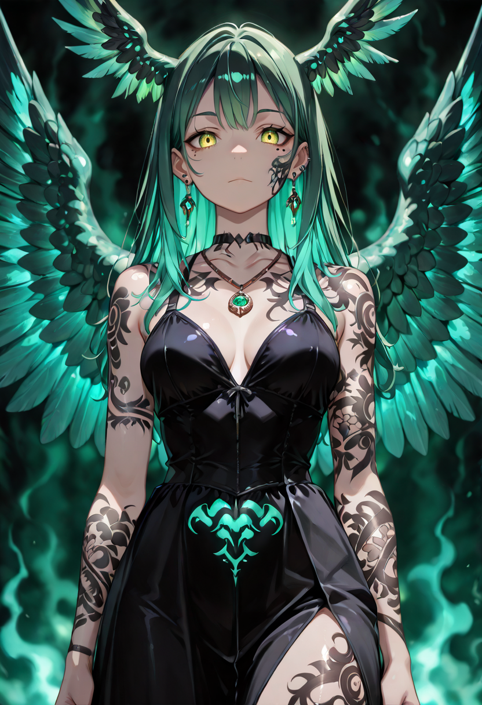
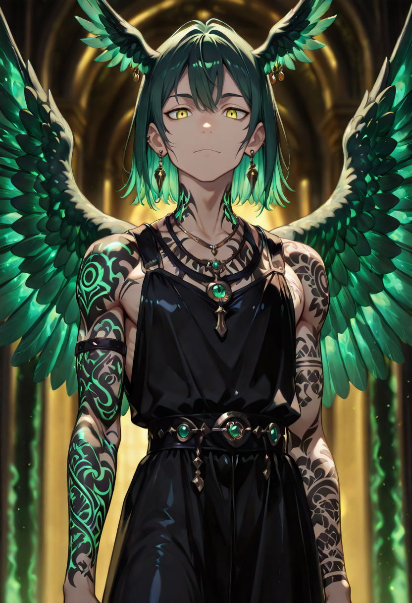
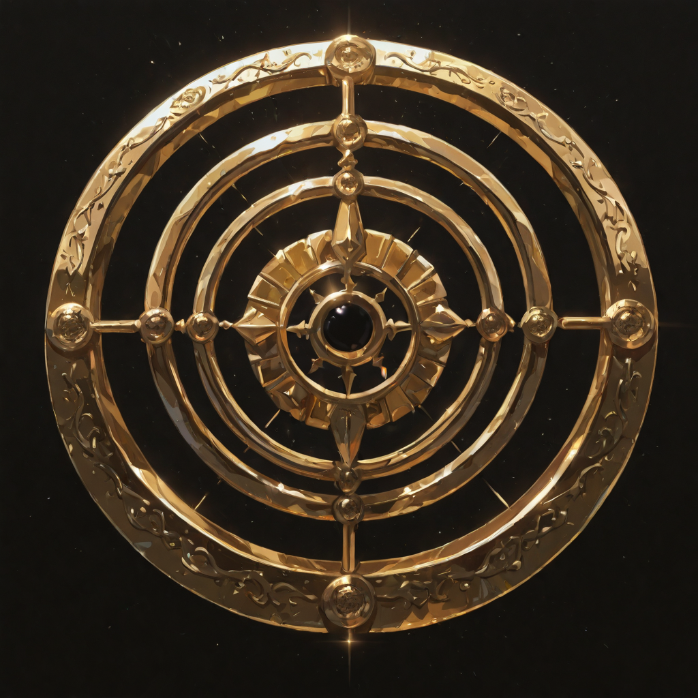
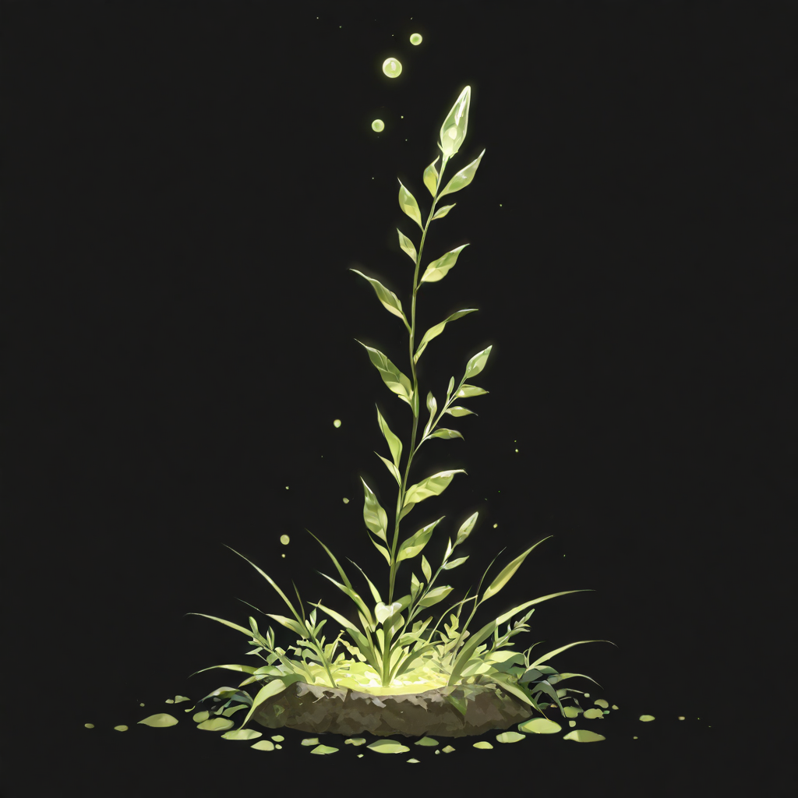

She Who Does Not Look Away
The Valkyrie Guardians were, in their previous lives, those who chose to stay. Nurses who remained in overrun field hospitals. Commanders who ordered the retreat and then were the last to take it. Priests who continued last rites as the walls fell. They did not die from inattention or bad luck , they died from a deliberate refusal to discontinue what they were doing.
Malicott selected them specifically because of this quality. She does not want soldiers who fight well. She wants soldiers who cannot stop caring , even when stopping would be the survivable choice. The Valkyrie Guardians are proof that caring is a structural force, not a feeling.
Their divine intervention is literal: they have been observed descending into corpse zones mid-battle to retrieve falling allies while the engagement continued around them. Other units step aside. The Valkyrie Guardian does not seem to notice the danger, which is perhaps the most terrifying thing about her.
Tactical Data
Guardian's Light
Base
Divine Intervention
Active
Celestial Grace
PassiveGallery